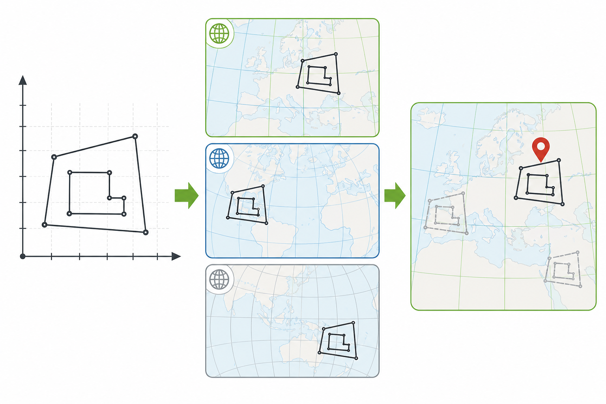
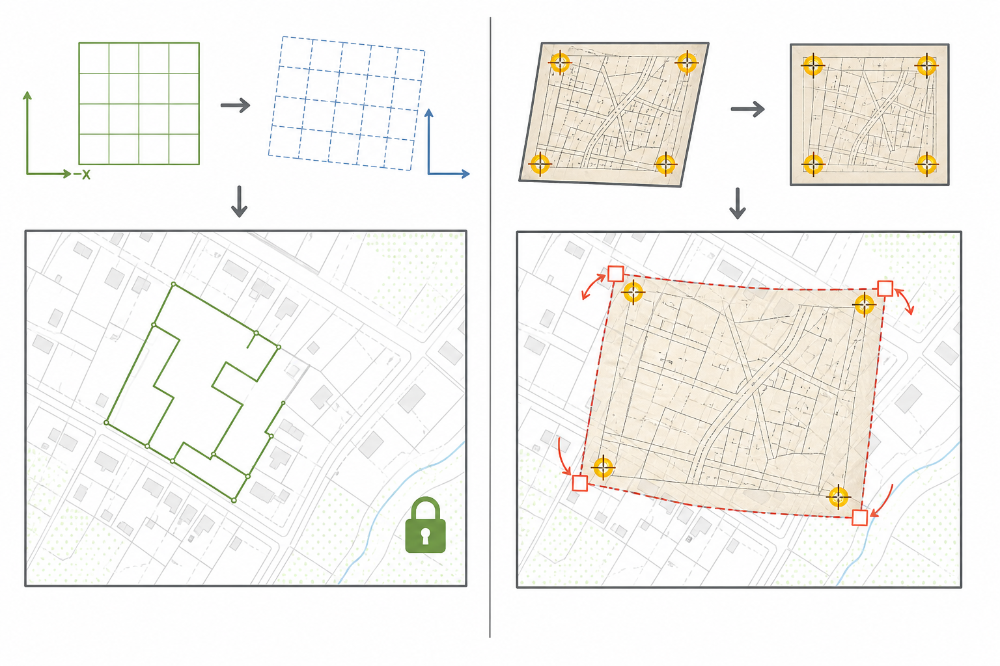
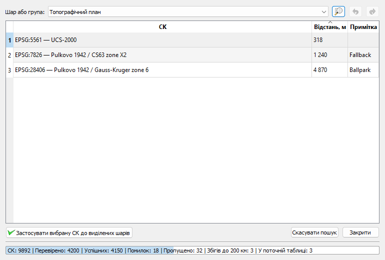
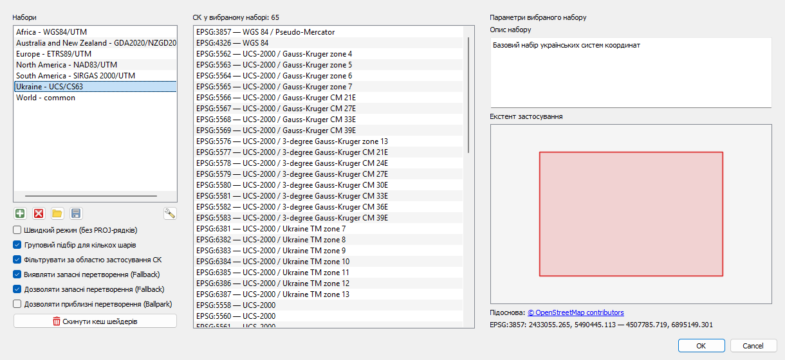
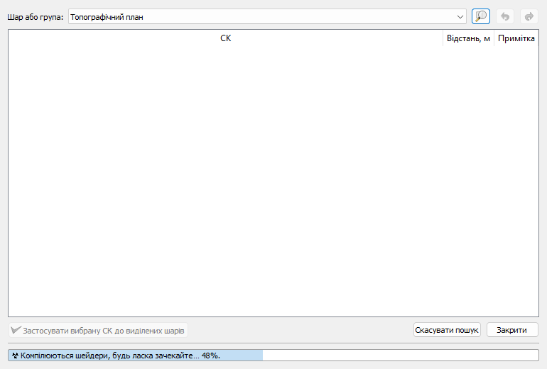

Що робить плагін?
CRS Magic finder допомагає визначити ймовірну систему координат (СК) для шару, якщо вона відсутня або призначена неправильно. Плагін аналізує координати векторних об’єктів або екстент растра, перевіряє вибраний набір СК і порівнює отримане розташування з точкою, яку ви вказали на карті.
- працює з коректними векторними та растровими шарами;
- може перевіряти кожен шар окремо або групувати просторово пов’язані шари;
- показує можливі СК, які розміщують дані в межах 200 км від точки кліку;
- дозволяє призначити результат одному чи кільком шарам і локально скасувати дію.
Як плагін визначає СК
Координати об’єктів можуть бути правильними, але QGIS не знає, у якій системі їх потрібно читати. Наприклад, одна й та сама пара чисел X і Y дає різне положення на карті залежно від вибраної проєкції, зони та датума. CRS Magic finder послідовно трактує наявні числа як координати в різних СК, трансформує обчислений центр даних у СК карти та вимірює відстань до місця, яке ви вказали клацанням.

До таблиці потрапляють варіанти, що розміщують центр у межах 200 км від точки кліку. Менша відстань означає кращий просторовий збіг, але не доводить, що правильними є датум, зона або конкретна реалізація СК. Результат потрібно перевіряти за відомими об’єктами, підписами координатної сітки чи іншими надійними даними.
Чим це відрізняється від геоприв’язки
Геоприв’язка визначає нове положення даних за контрольними точками й може обчислювати зсув, поворот, масштабування або складнішу деформацію. CRS Magic finder не використовує контрольні точки й не обчислює таких перетворень. Він лише шукає зареєстровану СК, у якій уже наявні координати дають очікуване положення.

- Якщо координати правильні, але СК відсутня або призначена помилково, плагін може допомогти знайти й призначити правильну СК.
- Якщо креслення має локальний початок координат, растр заданий у пікселях, а об’єкти потрібно пересунути, повернути чи розтягнути за відомими точками, потрібен інструмент геоприв’язки або просторового перетворення даних.
- Якщо після призначення кандидата форма або взаємне розташування об’єктів правильні, але весь шар залишається зміщеним, самої заміни СК недостатньо.
Швидкий старт
- Додайте картографічну основу. Вона допоможе вказати очікуване реальне місце розташування даних і перевірити результат.
- Виділіть шари або групи у панелі «Шари». Порожні, некоректні та непідтримувані шари буде пропущено.
- Запустіть CRS Magic finder. Основна кнопка доступна в меню та на панелі UA SPT. Стрілка біля кнопки відкриває вибір набору СК, режими пошуку, налаштування і цю довідку.
- Клацніть на карті приблизно там, де мають бути розташовані вибрані дані. Не потрібно влучати точно в об’єкт — важлива правильна місцевість.
- Дочекайтеся завершення. Можливі СК з’являються у таблиці поступово. Після успішного завершення найближча знайдена СК автоматично призначається кожному початково вибраному шару.
- Перевірте накладання. Якщо найближчий варіант неправильний, виберіть інший рядок і застосуйте його вручну.
Вікно результатів
Список «Шар або група» перемикає окремі таблиці результатів. Вибір синхронізується з деревом шарів. Кнопка з лупою наближує карту до поточного шару або групи, а кнопки зі стрілками скасовують і повторюють призначення СК, зроблені поки це вікно відкрите.

Як читати таблицю
Ручне застосування
Виділіть потрібний рядок, потім у панелі «Шари» виділіть цільові шари й натисніть «Застосувати вибрану СК до виділених шарів». Зверніть увагу: кнопка працює з шарами, виділеними в панелі саме в цей момент; це можуть бути не ті шари, з яких починався пошук. Подвійне клацання рядка виконує ту саму дію.
Налаштування пошуку
Усі параметри доступні у вікні «Налаштування…», а основні перемикачі також дублюються в меню кнопки плагіна.

Режими
- Швидкий режим (без PROJ-рядків) — використовує визначення СК безпосередньо з бази QGIS. Може пришвидшити підготовку великого набору; на старих версіях QGIS інколи дає некоректні результати.
- Груповий підбір для кількох шарів — об’єднує шари за перетином обчислених екстентів і перевіряє їх спільно. Вимкніть, якщо кожен шар потрібно оцінювати незалежно.
- Фільтрувати за областю застосування СК — перед трансформацією пропускає СК, офіційна область яких не перетинає район 200 км навколо точки кліку, а після трансформації залишає лише результати, центр яких лежить у межах цієї області. СК без визначеної області не відсіюються. Параметр вимкнений за замовчуванням, оскільки старі або нетипово використані дані можуть виходити за офіційні межі СК.
- Виявляти запасні перетворення (Fallback) — дає плагіну змогу виявляти й позначати запасні операції. Самі запасні перетворення цей параметр не забороняє.
- Дозволяти запасні перетворення (Fallback) — якщо рекомендована операція недоступна, дозволяє PROJ використати іншу придатну операцію. Такий результат позначається в таблиці й може бути менш точним.
- Дозволяти приблизні перетворення (Ballpark) — допускає орієнтовні перетворення без гарантованої геодезичної точності. Використовуйте лише для пошуку можливих СК і ретельно перевіряйте результат. Цей дозвіл має пріоритет над забороною запасних перетворень.
Набори систем координат
Набір обмежує кількість СК, які перевіряє плагін. Активний набір вибирається в меню кнопки й зберігається між сеансами QGIS. Пункт «Усі СК» не є окремим набором: він перевіряє земні горизонтальні 2D-системи з бази QGIS і пропускає СК інших небесних тіл, вертикальні, геоцентричні, тривимірні географічні та інші типи, які неможливо надійно оцінити за 2D-центром шару. Застарілі (deprecated) СК не відсіюються, оскільки вони можуть відповідати старим картам, кресленням і архівним даним.
Підготовка цього списку виконується у фоновій задачі як окремий етап із власним прогресом від 0 до 100%. Поки вона триває, внизу таблиці показано «☢️ Компілюються шейдери, будь ласка зачекайте… 37%.» Це жартівлива назва підготовки каталогу СК, а не операція з графічними шейдерами. Після завершення одразу починається звичайна статистика перевірки. Відфільтрований список зберігається в пам’яті до закриття QGIS, тому наступні пошуки в тому самому сеансі не повторюють підготовку каталогу. Якщо перша підготовка тривала понад 30 секунд, список також зберігається між сеансами. Кеш має відбиток версії QGIS, переліку і файлів бази СК, тому дані різних профілів або каталогів не змішуються, а після зміни бази список буде підготовлено заново. Кнопка «Скинути кеш шейдерів» у вікні налаштувань очищає список із пам’яті та поточного профілю QGIS. Після цього наступний пошук «Усі СК» знову виконає підготовку каталогу.

Під час першого запуску плагіна автоматично активується набір Ukraine - UCS/CS63; надалі плагін запам’ятовує вибір користувача.
Вбудовані набори
Разом із плагіном постачається сім початкових наборів:
| Назва в меню | СК | Що містить |
|---|---|---|
| Ukraine - UCS/CS63 | 65 | Українські СК UCS-2000 і CS63, поширені історичні системи та загальні WGS 84 / Web Mercator. |
| World - common | 7 | Поширені глобальні географічні, веб-, рівновеликі та рівновіддалені проєкції. |
| Europe - ETRS89/UTM | 17 | ETRS89, загальноєвропейські LAEA/LCC та зони ETRS89 / UTM 28N–38N. |
| Africa - WGS84/UTM | 28 | WGS 84 / UTM 28–39 для обох півкуль і континентальні проєкції Африки. |
| North America - NAD83/UTM | 28 | NAD83, континентальні рівновеликі СК та NAD83 / UTM 1N–23N. |
| South America - SIRGAS 2000/UTM | 24 | SIRGAS 2000 та його північні й південні зони UTM. |
| Australia and New Zealand - GDA2020/NZGD2000 | 14 | GDA2020 / MGA 50–59 і NZGD2000 / New Zealand Transverse Mercator 2000. |
Число біля назви в меню показує поточну кількість СК у наборі й може змінитися після редагування або імпорту. У налаштуваннях можна додавати, перейменовувати й видаляти вбудовані та користувацькі набори, редагувати склад СК, додавати опис та екстент застосування, а також імпортувати або експортувати один чи кілька наборів у JSON.
Типові ситуації
Плагін просить спочатку виділити шари
Виділіть хоча б один коректний векторний або растровий шар у панелі «Шари». Позначка видимості шару не замінює виділення рядка.
Нічого не знайдено
Перевірте місце кліку, виберіть ширший набір СК і за потреби дозвольте запасні перетворення. Якщо ввімкнено фільтр області застосування СК, повторіть пошук без нього. Якщо центроїд даних розташований близько до початку координат, шар може бути в локальній або умовній системі й не мати однозначної прив’язки до місцевості.
Пошук триває довго
Використайте менший тематичний набір, увімкніть швидкий режим або груповий підбір для просторово пов’язаних шарів. Пошук серед усієї бази QGIS може перевіряти тисячі визначень СК. Одноразова підготовка релевантного каталогу кешується; її повторний запуск у тому самому сеансі QGIS не виконується.
QGIS повідомляє про недоступне переважне перетворення
Такі службові попередження виникають, коли QGIS/PROJ перебирає операції між СК. Під час активного пошуку плагін прибирає з Message Bar лише повідомлення про недоступне переважне перетворення й записує їх у Журнал повідомлень → CRS Magic finder / трансформації. Інші попередження QGIS та повідомлення плагіна не перехоплюються.
Найближча СК накладається неправильно
Відстань — це підказка, а не доказ. Перевірте наступні можливі СК, зверніть увагу на зону проєкції, датум і примітки Fallback/Ballpark. Спробуйте повторити пошук, точніше вказавши місце на карті, або вимкніть приблизні перетворення.
Потрібно повернути попередню СК
Скористайтеся кнопкою скасування у вікні результатів, доки воно відкрите. Після закриття вікна історія плагіна очищується, тому перед пакетним призначенням варто зберегти проєкт або записати початкові СК.